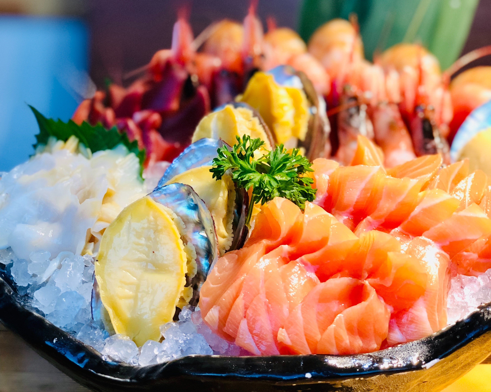

Did you know that ...
- Ackee
- Apra
- Avocado
- Apricot
- Banana
- Bumpy Bananas
- Mango
- Coconut
- Star Fruit
- Guinep Fruit
- Papaya
- Passion Fruit
- Sour Sop
- Pineaple
- Bread Fruit
- Cainit
- Barbadine Fruit
- Grenadine Fruit (Pomegranate)
- Custard Apple
- Watermelon
- Jackfruit
- Grapefruit

Sustainable Caribbean Seafood
- Cracked Conch
- Lobster